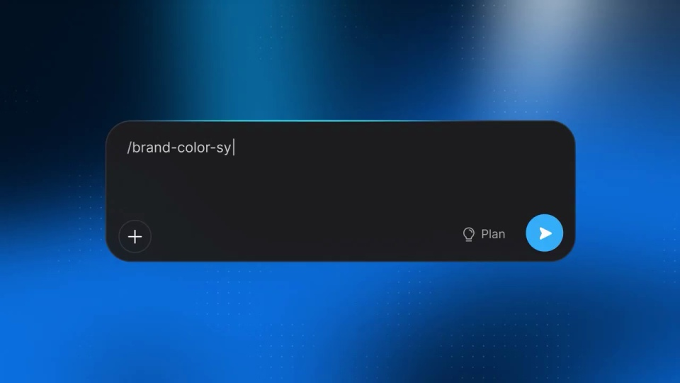

Bolt / V374
Bolt Skills｜团队能力展示
把重复交代的要求变成可调用的技能；用一次配色变化证明技能真正作用于页面。
构图与编排 可播放 · 可替换内容
整体编排规则示例
查看 HTML 源码
<!doctype html><html lang="zh-CN"><meta charset="utf-8"><meta name="viewport" content="width=device-width,initial-scale=1"><title>Bolt Skills｜团队能力展示 · sequence</title><style>html,body{margin:0;width:100%;height:100%;overflow:hidden;background:#061325}canvas{display:block;width:100%;height:100%;object-fit:contain}</style><body data-mode="sequence"><canvas width="1000" height="600"></canvas><script src="data.js"></script><script src="common.js"></script><script src="scene.js"></script><script src="bridge.js"></script></body></html>画面元素输入框嵌套菜单技能表单仓库输入文件标签网站结果
MOTION LANGUAGE
动作与构图
局部动作 · 构图规则
01
先从菜单找到技能
先从菜单找到技能规则示例
查看 HTML 源码
<!doctype html><html lang="zh-CN"><meta charset="utf-8"><meta name="viewport" content="width=device-width,initial-scale=1"><title>Bolt Skills｜团队能力展示 · sequence</title><style>html,body{margin:0;width:100%;height:100%;overflow:hidden;background:#061325}canvas{display:block;width:100%;height:100%;object-fit:contain}</style><body data-mode="clip" data-start="7" data-end="11"><canvas width="1000" height="600"></canvas><script src="data.js"></script><script src="common.js"></script><script src="scene.js"></script><script src="bridge.js"></script></body></html>深色输入框上展开两级菜单，Skills 项高亮后再出现技能列表。游标路径跟随菜单层级，选中项回到输入框成为标签。
02
创建、导入和上传是三个入口
先示意技能名称、说明与规则正文，再分别展示仓库地址和文件上传。每个入口留一个清楚的完成状态，随后才进入调用。
03
规则生效要在同一页面比较
规则生效要在同一页面比较规则示例
查看 HTML 源码
<!doctype html><html lang="zh-CN"><meta charset="utf-8"><meta name="viewport" content="width=device-width,initial-scale=1"><title>Bolt Skills｜团队能力展示 · sequence</title><style>html,body{margin:0;width:100%;height:100%;overflow:hidden;background:#061325}canvas{display:block;width:100%;height:100%;object-fit:contain}</style><body data-mode="clip" data-start="33" data-end="39"><canvas width="1000" height="600"></canvas><script src="data.js"></script><script src="common.js"></script><script src="scene.js"></script><script src="bridge.js"></script></body></html>调用前后保持页面布局与内容不变，只改变技能负责的配色。蓝黑背景和白字承担产品框架，网站保留自己的内容风格。
04
新主题选择可见的规则
可替换为排版、品牌色或组件规范；准备规则文本与对应的前后页面，避免仅展示文件导入成功。
SEQUENCE
段落与节奏
点击段落，定位到上方编排示意。

画面参考 · 离散静帧
KEEP THE RELATIONSHIPS
制作其他主题
- 替换技能规则与前后页面；保留录入、保存、调用、生效。
制作约束
输入框 / 嵌套菜单 / 技能表单 / 仓库输入 / 文件标签 / 网站结果
- 深色输入框上展开两级菜单，Skills 项高亮后再出现技能列表。游标路径跟随菜单层级，选中项回到输入框成为标签。
- 先示意技能名称、说明与规则正文，再分别展示仓库地址和文件上传。每个入口留一个清楚的完成状态，随后才进入调用。
- 调用前后保持页面布局与内容不变，只改变技能负责的配色。蓝黑背景和白字承担产品框架，网站保留自己的内容风格。
- 可替换为排版、品牌色或组件规范；准备规则文本与对应的前后页面，避免仅展示文件导入成功。